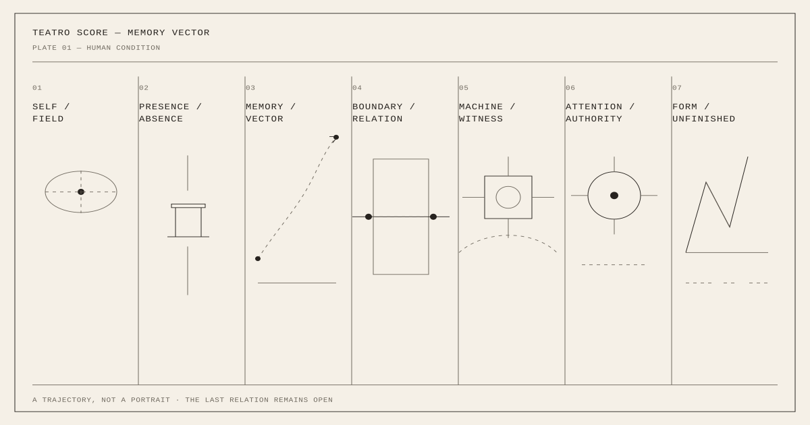

Teatro — An Unfinished Composition
The human condition is not a completed story. It is a field of relations, memories, machines, absences, and acts of attention that we temporarily give form.

A human being is not a story. Stories are things we make afterwards: they have beginnings, causes, protagonists, and consequences. Human experience is less obedient. A smell enters a room and somebody dead for thirty years is suddenly present. A sentence said yesterday changes something that happened when we were twelve. A chair becomes a person. A photograph becomes evidence and then, years later, becomes a question. A machine remembers something we have forgotten. Someone we love stands beside us and remains unreachable.
These things coexist. This is where Teatro begins: not with theatre as an institution, a building, or a performance, but with the strange condition of being human. We inhabit a field containing more than can ever be reconciled into one account. Memory, body, language, objects, other people, machines, places, inherited images, desire, fear, and imagination continually enter this field. Some remain. Some disappear. Some return transformed. We usually call the resulting arrangement a self. Teatro treats it as a composition.
The person is not in the middle
There is a persistent temptation to represent a human life by placing the human being at its centre. The portrait does this. Biography does it. Psychology frequently does it. Contemporary computation does it with profiles: preferences, histories, behaviours, and predictions accumulate around an individual until a model appears to know who that person is.
Teatro begins somewhere else. The human being is not necessarily the figure in the middle of the image. The human may be the relation between a table and an empty chair, between a sentence and the person who cannot answer it, or between an image remembered incorrectly and the place where something actually happened. A person can even be absent and remain the strongest presence in the field.
This is an old knowledge of theatre. Put an empty chair on a stage and wait long enough. It ceases to be furniture. Attention changes it.
A score instead of an answer
For this reason Teatro produces scores. A score does not explain what something means; it establishes relations in time and space. Something enters. Something remains. Something crosses a boundary. Something answers. Something does not. A score can hold contradiction without repairing it and preserve uncertainty without turning uncertainty into failure. This makes the score an unusually precise model of human experience.
We continuously compose from material we did not choose. We inherit bodies, languages, families, histories, and places. Events happen before we understand them. Other people enter our lives carrying worlds inaccessible to us. Technologies extend our senses and memories while simultaneously changing what remembering means. We have limited sovereignty over any of this, yet we are not powerless.
We can attend. We can select. We can place one thing beside another. We can notice a relation that did not previously have a name. We can revise. We can refuse the premature ending. That small authority is enormous.
Memory does not reproduce the past
Memory is often imagined as an archive. Teatro treats it more like a vector. A memory has direction. It arrives from somewhere, but its significance belongs partly to where it is going. The remembered thing changes because the person remembering has changed. The past therefore does not simply return. It acts upon the present.
An image from this morning can stand beside an image from childhood. A technical diagram can stand beside a garden. A fragment of conversation can meet a fictional character. None needs to surrender its origin. Their proximity produces a new condition. The Memory Vector gathers these traces. The Teatro Score asks what happens when one of them is given a place to act.
This is not autobiography in the conventional sense. The purpose is not to reconstruct what happened. It is to discover what is still happening.
Theatre before theatre
Theatre begins long before somebody buys a ticket. It begins whenever attention creates a field in which relations become perceptible. A child arranges objects on a floor. Two people sit at opposite ends of a table. Someone speaks to a person who is no longer alive. A machine repeats a human voice. A photograph is placed beside another photograph and suddenly each changes the meaning of the other. These are already theatrical events.
The stage merely makes their structure visible. Teatro therefore understands theatre less as an art form than as a human technology: a method for giving temporary form to relationships that cannot otherwise be held still. The result does not need to resolve them. It needs to let us see them.
The machine enters the field
Artificial intelligence makes this question newly urgent. For the first time, humans routinely encounter machines that can participate in language, interpretation, composition, and representation at enormous speed. The obvious question is whether the machine can create. Teatro is interested in another question:
Where does the human remain?
Not by excluding the machine. The machine is already part of the field. It can remember, transform, propose, classify, generate, connect, and perform. It can produce images and voices. It can discover relationships a human has overlooked. But accumulation is not authorship.
The decisive human act may become increasingly small and increasingly important: This. Here. Not that. Again. Leave it unresolved. Authorship moves from possessing every means of production toward assuming responsibility for attention. The machine can generate possibilities. The human decides what is allowed to matter.
An unfinished composition
Perhaps this is the human condition Teatro depicts. We arrive inside compositions already underway. We encounter other people whose inner worlds we cannot possess. We carry memories that alter while we remember them. We construct machines that become participants in the environment that constructed us. We continually make provisional arrangements from all of it and call those arrangements a day, a relationship, a work, sometimes a life.
Nothing guarantees coherence. And still we compose. The score is therefore never the final image of a person. It is evidence that, for one moment, somebody attended closely enough to make a constellation visible.
Tomorrow the relations may be different. Another thing will enter. Something that seemed central will move toward the edge. Something apparently insignificant will acquire enormous weight. The score can change. The human condition remains unfinished.
And perhaps our peculiar freedom lies precisely there: not in becoming masters of the field, but in remaining capable of attending to it, and giving it form.